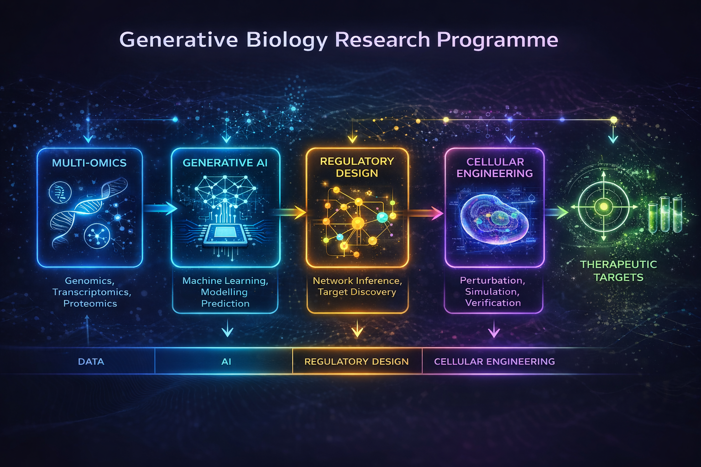

Dr Bilal Malik — Generative Biology Research Programme
AI-driven digital twins • Generative regulatory modelling • Programmable cellular systems
Senior Research Associate, UCL Queen Square Institute of Neurology London, UK
Email: b.malik@ucl.ac.uk b.malik@gmx.co.uk
Nationality: British, Sex: Male
ORCID: https://orcid.org/0000-0002-3527-0102
Google Scholar: https://scholar.google.com/citations?user=VEkY9VIAAAAJ&hl=en
LinkedIn: http://www.linkedin.com/in/bilal-malik-a4286438
Programme Snapshot
I develop AI-driven generative biology frameworks that learn regulatory architectures from transcriptomic states and simulate how cellular systems can be reprogrammed toward resilient phenotypes. My work bridges experimental neuroscience with systems biology and machine learning to move from biological observation toward programmable design.
Research Programme Summary
I am a translational neuroscientist specialising in motor neuron and neuromuscular diseases including Spinal and Bulbar Muscular Atrophy (SBMA) and ALS4. My research spans neuroscience, biochemistry, molecular and cell biology, transcriptomics, and bioinformatics, integrating multi-omic and AI-based methods to reveal mechanisms of neurodegeneration and regeneration. I currently lead the SBMA & ALS4 Research Group at UCL, supervising PhD, MSc and BSc students and developing new therapeutic strategies to slow or reverse neuromuscular decline.
Research Impact
My research integrates cross-species transcriptomics, network modelling and digital-twin simulation to identify regulatory principles underlying neuromuscular and motor neuron disease. Through platform development (MyoNeuroTwin) and translational collaboration, I aim to accelerate target discovery and intervention design while building toward a broader vision of programmable biology.
Employment History
Current Post (2016 – Present)
Senior Research Associate / Group Lead, SBMA and ALS4 Research Group
Department of Neuromuscular Diseases / Sobell Department of Motor Neuroscience, UCL Institute of Neurology (IoN)
Research interests: neurodegeneration, motor neuron disease, neuromuscular disorders.
Lead mechanistic and therapeutic studies in SBMA and ALS4 models and human samples.
Previous Appointments
| Years | Position | Department/Institution |
|---|
| 2012 – 2016 | Research Associate | Sobell Department of Motor Neuroscience, UCL IoN |
| 2006 – 2012 | Post-doctoral Research Fellow | Sobell Department of Motor Neuroscience, UCL IoN |
| Research Worker | MRC Centre for Neurodegeneration Research, King's College London |
| 1998 – 2000 | Research Worker | Department of Immunology, University of Strathclyde, Glasgow |
Education
| Years | Qualification | Institution |
|---|
| 2001 – 2004 | PhD Neuroscience | MRC Centre for Neurodegeneration Research, King's College London |
| 2000 – 2001 | MSc Neuroscience | Institute of Psychiatry, King's College London |
| 1995 – 1996 | MSc Bioengineering | Bioengineering University of Strathclyde, Glasgow |
| 1989 – 1993 | BSc Biomedical Science | University of St Andrews, Scotland |
| 1980 – 1989 | Scottish Certificate of Education Higher Grade 1989: Biology (A), English (A), Physics (A), Chemistry (B), Maths (B) | Belmont House School, Glasgow |
Research Support and Funding
| Years | Funder | Role | Title | Amount |
|---|
| 2020–2022 | Kennedy's Disease Association (USA) | PI | Investigating disease pathways and novel therapeutic targets in SBMA | $50,000 |
| 2017–2020 | Motor Neuron Disease Association (UK) | Co-PI | Targeting disease pathways in novel models of MND | £245,000 |
| 2017–2019 | Kennedy's Disease Association (USA) | PI | Targeting pathways of disease in SBMA | $50,000 |
| 2016–2019 | AFM France | Co-PI | Targeting molecular pathways of disease in SBMA | €100,000 |
| 2012–2015 | MNDA (UK) | Co-PI | Regulation of gene expression in MND | £245,000 |
| 2009–Present | Kennedy's Disease Research Donation | Co-PI | Investigating the pathogenesis of Kennedy's Disease | £187,764 |
| 2011 | Bogue Research Fellowship | PI | Collaboration with Dr La Spada, UC San Diego | |
| 2001–2004 | Medical Research Council (UK) | PhD Studentship | Regulation of Gene Expression in Alzheimer's Disease | |
Extended list of publications, invited lectures and academic outputs associated with the MyoNeuroTwin research
programme.
Selected Publications
- Devine H. et al. Conserved Aberrant Developmental Trajectories… (2025)
- Bennett CL. et al. Senataxin mutations… Acta Neuropathol (2018)
- Montague K. et al. ER stress in SBMA… Brain (2014)
- Malik B. et al. Gene expression analysis… Sci Rep (2019)
Invited Talks
- ENMC Workshop — Towards a unifying effort to fight Kennedy’s disease
- Kennedy’s Disease Association Conference
- International SBMA Research Conference
- UCL Queen Square Neuromuscular Research Day
Publications
- Devine, H., Roberts, M. J., Ziff, O. J., Hanna, M. G., Greensmith, L., Patani, R. & Malik, B*. Conserved
Aberrant Developmental Trajectories of Human and Mouse SBMA Motor Neurons. bioRxiv,
2025.2009.2017.674754, doi:10.1101/2025.09.17.674754 (2025). *Senior Author
- Villarroel-Campos, D., Rhymes, E. R., Tosolini, A. P., Malik, B., Vagnoni, A., Schiavo, G. & Sleigh, J.
N. Processivity and BDNF-dependent modulation of signalling endosome axonal transport are impaired in
aged mice. bioRxiv, 2025.2001.2030.635507, doi:10.1101/2025.01.30.635507 (2025).
- Pennuto, M., Pradat, P. F., Soraru, G., Greensmith, L. & Consortium, K. D. 271st ENMC international
workshop: Towards a unifying effort to fight Kennedy's disease. 20-22 October 2023, Hoofddorp,
Netherlands. Neuromuscul Disord 38, 8-19, doi:10.1016/j.nmd.2024.03.003 (2024).
- Forouhan, M., Lim, W. F., Zanetti-Domingues, L. C., Tynan, C. J., Roberts, T. C., Malik, B., Manzano,
R., Speciale, A. A., Ellerington, R., Garcia-Guerra, A., Fratta, P., Soraru, G., Greensmith, L.,
Pennuto, M., Wood, M. J. A. & Rinaldi, C. AR cooperates with SMAD4 to maintain skeletal muscle
homeostasis. Acta Neuropathol 143, 713-731, doi:10.1007/s00401-022-02428-1 (2022).
- Lombardi, V., Bombaci, A., Zampedri, L., Lu, C. H., Malik, B., Zetterberg, H., Heslegrave, A. J.,
Rinaldi, C., Greensmith, L., Hanna, M. G., Malaspina, A. & Fratta, P. Plasma pNfH levels differentiate
SBMA from ALS. J Neurol Neurosurg Psychiatry 91, 215-217, doi:10.1136/jnnp-2019-320624 (2020).
- Gray, A. L., Annan, L., Dick, J. T., La Spada, A. R., Hanna, M. G., Greensmith, L. and Malik, B*. (2020)
Deterioration of muscle force and contractile characteristics are early pathological events in spinal
and bulbar muscular atrophy mice. Dis Model Mech. 2020 Mar 9. pii: dmm.042424. doi: 10.1242/dmm.042424.
*Senior Author
- Lombardi V, Querin G, Ziff OJ, Zampedri L, Martinelli I, Heller C, Foiani M, Bertolin C, Lu CH, Malik B,
Allen K, Rinaldi C, Zetterberg H, Heslegrave A, Greensmith L, Hanna M, Soraru G, Malaspina A, Fratta P.
Muscle and not neuronal biomarkers correlate with severity in spinal and bulbar muscular atrophy.
Neurology. 2019 Mar 12;92(11):e1205-e1211.
- Malik B, Devine H, Patani R, La Spada AR, Hanna MG, Greensmith L. Gene expression analysis reveals early
dysregulation of disease pathways and links Chmp7 to pathogenesis of spinal and bulbar muscular atrophy.
Sci Rep. 2019 Mar 5;9(1):3539
- Bennett CL, Dastidar SG, Ling SC, Malik B, Ashe T, Wadhwa M, Miller DB, Lee C, Mitchell MB, van Es MA,
Grunseich C, Chen Y, Sopher BL, Greensmith L, Cleveland DW, La Spada AR. Senataxin mutations elicit
motor neuron degeneration phenotypes and yield TDP-43 mislocalization in ALS4 mice and human patients.
Acta Neuropathol. 2018 Sep;136(3):425-443. Epub 2018 May 3
- Intron retention and nuclear loss of SFPQ are molecular hallmarks of ALS. Luisier R, Tyzack GE, Hall CE,
Mitchell JS, Devine H, Taha DM, Malik B, Meyer I, Greensmith L, Newcombe J, Ule J, Luscombe NM, Patani
R. Nat Commun. 2018 May 22;9(1):2010.
- Rinaldi C, Malik B, Greensmith L. Targeted molecular therapies for SBMA. J Mol Neurosci. 2016
Mar;58(3):335-42. Epub 2015 Nov 17
- Rusmini R, Crippa V, Cristofani R, Rinaldi C, Carra S, Malik B, Greensmith L, Poletti A. The Role of the
Protein Quality Control System in SBMA. J Mol Neurosci. 2016 Mar;58(3):348-64. Epub 2015 Nov 14
- Montague K, Malik B, Gray AL, La Spada AR, Hanna MG, Szabadkai G, Greensmith L. Endoplasmic reticulum
stress in Spinal and Bulbar Muscular Atrophy–a potential target for therapy. Brain. 2014 Jul; 137 (Pt
7):1894-906
- Malik B, Fernandes C, Killick R, Usardi A, Williamson R, Kellie S, et al. Transcriptomic analysis of
oligomeric amyloid-β treated primary cortical neurons reveals dysregulation of genes involved in the
biosynthesis of steroids and cholesterol. In: James V Rogers, editor. Microarrays: Principles,
Applications and Technologies. New York: Nova Science Publishers, Inc.; 2014. p. 269-95.
- Malik B, Nirmalananthan N, Gray AL, La Spada AR, Hanna MG, Greensmith L. Co-induction of the heat shock
response ameliorates disease progression in a mouse model of human spinal and bulbar muscular atrophy:
implications for therapy. Brain. 2013 Mar; 136 (Pt 3): 926-43.
- Malik B, Fernandes C, Killick R, Wroe R, Usardi A, Williamson R, Kellie S, Anderton BH, Reynolds CH.
Oligomeric amyloid-β peptide regulates genes involved in steroid and lipid metabolism in primary
neurons. Neurochem Int. 2012 Aug; 61 (3): 321-33.
- Killick R, Ribe EM, Al-Shawi R, Malik B et al. Clusterin regulates β-amyloid toxicity via
Dickkopf-1-driven induction of the wnt-PCP-JNK pathway. Mol Psychiatry. 2012 Nov 20.
- Fratta P, Malik B, Gray A, La Spada AR, Hanna MG, Fisher EM, Greensmith L. FUS is not dysregulated by
the spinal bulbar muscular atrophy androgen receptor polyglutamine repeat expansion. Neurobiol Aging.
2013 May; 34 (5): 1516.e17-9. Epub 2012 Oct 9.
- Malik B, Nirmalananthan N, Bilsland LG, La Spada AR, Hanna MG, Schiavo G, Gallo JM, Greensmith L.
Absence of disturbed axonal transport in Spinal and Bulbar Muscular Atrophy. Hum Mol Genet. 2011 May 1;
20(9): 1776-86. Epub 2011 Feb 11.
- Malik B, Currais A, Soriano S. Cell cycle-driven neuronal apoptosis specifically linked to amyloid
peptide Abeta1-42 exposure is not exacerbated in a mouse model of presenilin-1 familial Alzheimer's
disease. J Neurochemistry. 2008 Jul; 106(2): 912-6.
- Malik B, Currais A, Andres A, Towlson C, Pitsi D, Nunes A, Niblock M, Cooper J, Hortobágyi T, Soriano S.
Loss of neuronal cell cycle control as a mechanism of neurodegeneration in the presenilin-1 Alzheimer's
disease brain. Cell Cycle. 2008 Mar; 7(5): 637-46.
- Currais A, Malik B, Hortobágyi T, Soriano S. The neuronal cell cycle as a mechanism of pathogenesis in
Alzheimer's disease. Review article, The Journal of Slovenian Medical Association. 2008 May; 77 (II):
13-20.
Invited Talks
- 2024. 271st ENMC international workshop: Towards a unifying effort to fight Kennedy's disease. 20-22
October 2023, Hoofddorp, Netherlands.
- 2022. Invited External Speaker: Kennedys Association and KD-UK Patient Day 10-7-22, "Investigating
Disease Pathways and Novel Therapeutic Targets in Kennedys Disease."
- 2022. National Brain Bee Judge: National Brain Bee is the neuroscience competition for high school
students. Speaker 29-5-22, Title of Talk "Careers in Neuroscience – Academic Research, Neurodegeneration
and Motor Neuron Disease"
- 2021. Kennedys Disease Association (USA) conference Global Momentum: Bringing the KD Community Together.
"Investigating disease pathways and novel therapeutic targets in Spinal and Bulbar Muscular Atrophy
(SBMA)".
- 2021. International SBMA Research Conference. "Early deterioration and targeting of muscle function as a
therapeutic strategy for the treatment of SBMA"
- 2019. 241st ENMC international workshop: Towards a European unifying lab for Kennedy's disease, 15-2-19,
Hoofddorp, The Netherlands. "Investigating Disease Pathways to Establish Therapeutic Targets in Spinal
and Bulbar Muscular Atrophy".
- 2019. UCL Queen Square Institute of Neurology Department of Neuromuscular Diseases Annual Research Day,
12-7-19, Institute of Child Health, UCL. "Investigating disease pathways to establish novel therapeutic
targets in Spinal and Bulbar Muscular Atrophy"
- 2019. ALS Seminar Queen Square Institute of Neurology. UCL "Integrated transcriptomic and gene network
analysis reveals disease pathways and novel therapeutic targets in Spinal and Bulbar Muscular Atrophy"
- 2018. IV Italian meeting on Kennedy's disease 5-10-18, University of Padova, Italy. "Investigating
Disease Pathways in Spinal and Bulbar Muscular Atrophy".
- 2017. 1st Kennedy's Disease Patient Day, Radisson Blu Hotel, East Midlands Airport, 24.3.2017.
"Investigating Disease Pathways using Models of Kennedy's Disease"